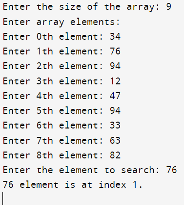

#include <stdio.h>
int recursiveLinearSearch(int arr[], int key, int index, int size) {
if (index >= size) {
return 0;
}
if (arr[index] == key) {
return index;
}
return recursiveLinearSearch(arr, key, index + 1, size);
}
int main() {
int arr[20], size, temp, key, i;
printf("Enter the size of the array: ");
scanf("%d", &size);
printf("Enter array elements: \n");
for (i = 0; i < size; i++) {
printf("Enter %dth element: ", i);
scanf("%d", &arr[i]);
}
printf("Enter the element to search: ");
scanf("%d", &key);
temp = recursiveLinearSearch(arr, key, 0, size);
if (temp == 0) {
printf("%d element Not found.\n", key);
} else {
printf("%d element is at index %d.\n", key, temp);
}
}
Output:
